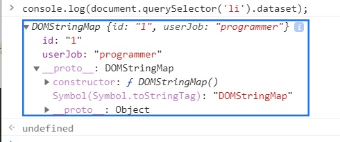
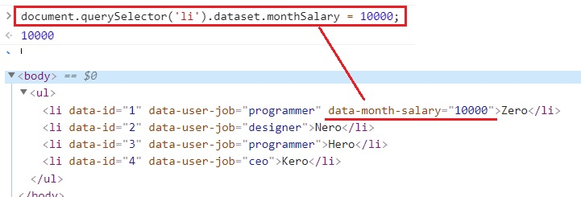

노드를 웹 서버로 사용하는 경우, 클라이언트(프론트앤드)와 빈번하게 데이터를 주고받게 됩니다.
이때 서버에서 보내준 데이터를 프런트엔드 어디에 넣어야 할지 고민이 됩니다.
프런트엔드에 데이터를 내려보낼 때 첫 번째로 고려해야할 점은 보안입니다.
클라이언트를 믿지 말라는 말이 있을 정도로 프런트엔드에 민감한 데이터를 내려보내는 것은 실수입니다.
비밀번호 같은 건 절대 내려보내지 않도록 합시다.
보안과 관련이 없는 데이터들은 자유롭게 프런트엔드로 보내도 됩니다.
자바스크립트 변수에 저장해도 되지만 HTML5에도 HTML과 관련된 데이터를 저장하는 공식적인 방법이 있습니다.
바로 data attribute입니다.
<ul>
<li data-id="1" data-user-job="programmer">Zero</li>
<li data-id="2" data-user-job="designer">Nero</li>
<li data-id="3" data-user-job="programmer">Hero</li>
<li data-id="4" data-user-job="ceo">Kero</li>
</ul>
<script>
console.log(document.querySelector('li').dataset);
// { id: '1', userJob: 'programmer'}
</script>
위와 같이 HTML 태그의 속성으로, data- 로 시작하는 것들을 넣어줍니다.
이들이 data attribute입니다.
data-id와 data-user-job을 주었습니다.
화면에 나타나지는 않지만 웹 어플리케이션 구동에 필요한 데이터들입니다.
나중에 이 데이터들을 사용해 서버에 요청을 보내게 됩니다.
data attribute의 장점은 자바스크립트로 쉽게 접근할 수 있다는 점입니다.
script 태그를 보면 dataset 속성을 통해 첫 번째 li 태그의 data attribute 에 접근하고 있습니다.
단, data attribute 이름이 조금씩 변형되었습니다.
앞의 data- 접두어는 사라지고 - 뒤에 위치한 글자는 대문자가 됩니다.
data-id는 id, data-user-job은 userJob이 되는 것입니다.

반대로 dataset에 데이터를 넣어도 HTML 태그에 반영됩니다.
document.querySelector('li').dataset.monthSalary = 10000;
위와 같은 코드를 입력하면 아래 스크린샷처럼 data-month-salary="10000" 이라는 속성이 생깁니다.

나중에 실습 예제에서 data attribute를 자주 쓰게 되므로 기억해두세요.
이제 실습에 필요한 지식을 어느 정도 익혔습니다.
실습을 하다가 기억이 나지 않는 부분이 있다면 돌아와서 다시 공부하기 바랍니다.
이제 본격적으로 노드를 살펴보도록 하겠습니다.